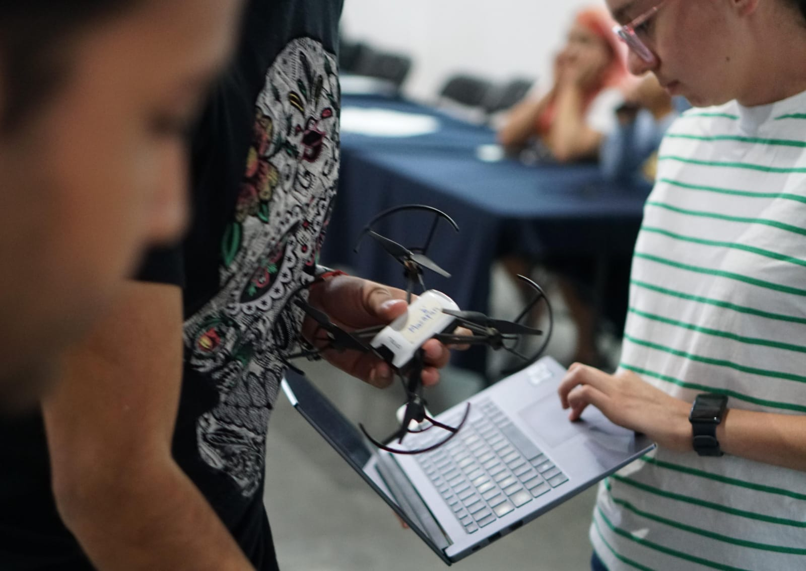

Mis proyectos recientes
Estos son algunos proyectos que he creado recientemente...


Soy estudiante de octavo cuatrimestre de Ingeniería en Electrónica y Control de Sistemas de Aeronaves. Tengo conoocimientos en las áreas de diseño de software aerotransportado, control de sistemas aéreos y electrónica aplicada. En el área de software manejo lenguajes como C/C++, Python, HTML y CSS, pero últimamente me he centrado en proyectos que involucran desarrollo de programas para seguimiento de trayectorías y misiones de Drones autónomos.
Diseño de software
Realizo desarrollo de software mediante los lenguajes de C/C++, Python, MATLAB, ensamblador, HTML, CSS, JavaScript
Participo en proyectos de desarrollo de UAV's
Realizo desarrollo de software enfocado en vehículos aereos no tripulados mediante los lenguajes de C/C++ y Python con ayuda de herramientas como ROS y Mavlink. Soy parte del equipo DronKab de la UNAQ
Estudiante
Soy estudiante de octavo cuatrimestre de Ingeniería en Electrónica y Control de Sistemas de Aeronaves en la Universidad Aeronáutica en Querétaro

Lucy muestra un rápido progreso en la adquisición de habilidades técnicas clave y una gran disposición para colaborar en proyectos. Su actitud positiva y su voluntad de aprender constantemente son cualidades valiosas en el campo de la programación. No tengo dudas de que Lucy seguirá creciendo y haciendo contribuciones significativas como desarrolladora frontend en el futuro.
Anel Montes
Instructora de DesarrolloWeb en TecnoloChicasPro

Es de mi agrado comunicar que Lucy es una persona comprometida con su trabajo, creativa, empática y curiosa. Me inspira con sus participaciones, sin duda colaborar con ella te aportará una gran satisfacción y seguridad.
Lind
LCT, soporte TI, impulsora de cultura libre, permacultora
Lucy siempre tiene una excelente disposición a aprender y aportar con su creatividad y su conocimiento a los proyectos que se le solicitan. Es una gran colaboradora y trabajadora en equipo, siempre cuenta con una actitud de disposición a aprender y a mejorar con cada actividad que realiza, además de contar con amplias fortalezas y cualidades en el desarrollo de programación.
Jair Aguilar
Estudiante de Ingeniería en Electrónica y Control de Sistemas de Aeronaves